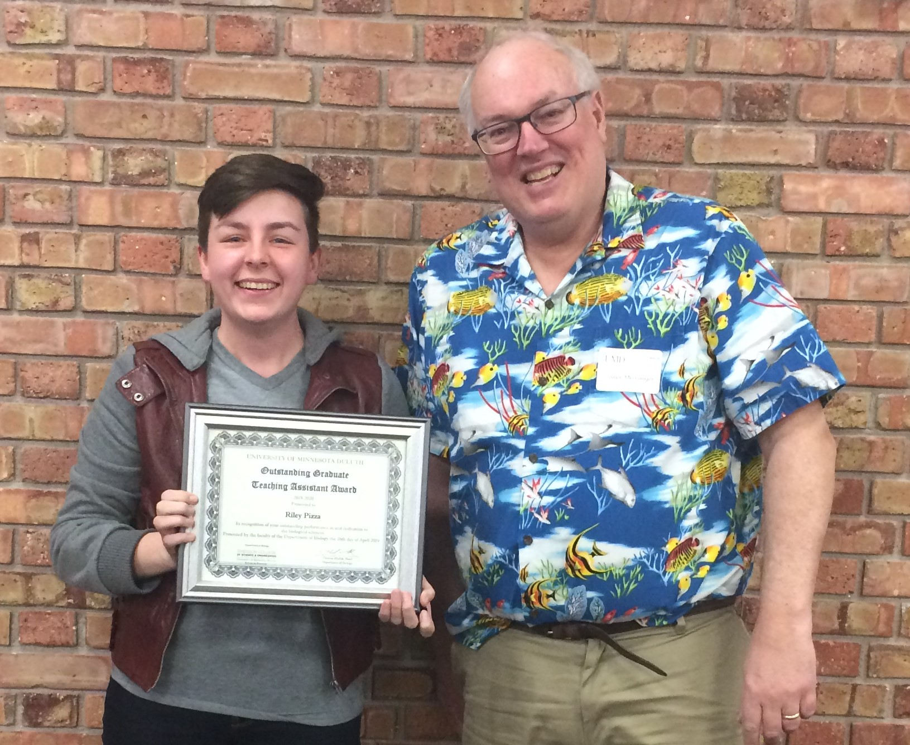

My Teaching Philosphy

My teaching philosophy emphasizes giving students opportunities to learn how to learn, fostering the growth of their self-efficacy, and empowering them to become responsible for their own learning.
RILEY PIZZA
My teaching philosophy emphasizes giving students opportunities to learn how to learn, fostering the growth of their self-efficacy, and empowering them to become responsible for their own learning.
Throughout the last several years, I have enga  I have created several active learning activities for small non-majors labs, inquiry based labs for introductory biology students, and case studies for upper level plant restoration courses .
created with
Website Builder Software .